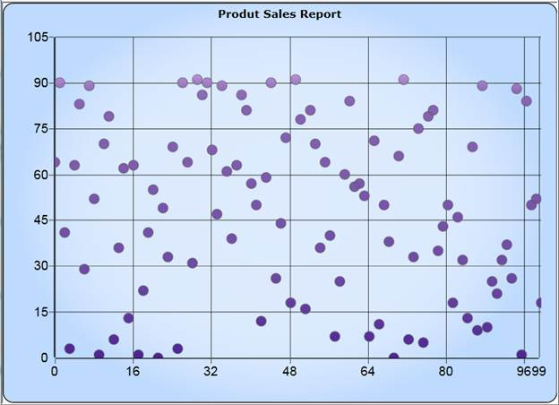
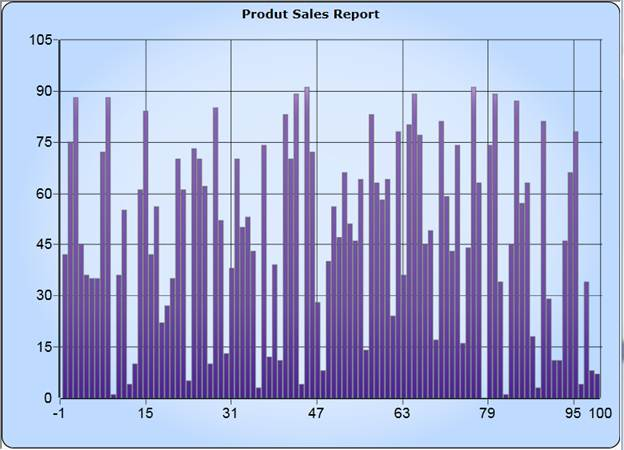

Fast Column and Fast Scatter Charts are similar to Column and Scatter charts respectively. It uses vertical bars (called columns) and scattered circles (called ellipse) to display different values of one or more items.
The advantages of Fast Charts:
· Loads faster than other charts
· Ensures high performance for displaying data.
· They can be used as real time charts to render huge number of data points.
Use Case Scenarios
It can be used for rendering large number of points like Stock Market Analysis.
Adding FastScatter to an Application
FastScatter and FastColumn Chart types can be added using the property Type in ChartSeries.
|
[XAML]
//Add FastScatter chart type to the series. <sync:ChartSeries Type="FastScatter" />
|
|
[C#]
//Add FastScatter chart type to the series.
Chart1.Areas[0].Series[0].Type = ChartTypes.FastScatter;
|

Figure 167: FastScatter
|
[XAML]
//Add FastColumn chart type to the series.
<sync:ChartSeries Type="FastColumn" />
|
|
[C#]
//Add FastColumn chart type to the series.
Chart1.Areas[0].Series[0].Type = ChartTypes.FastColumn;
|

Figure 168: FastColumn